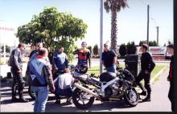

WAR 3 Dams Run
The 3 Dams run is one of the local runs in Perth WA. As the name suggests, the route takes in 3 of the local Dams (Mundaring, Canning and Serpentine). Dams are located in mountains. Mountains mean twisty roads. Twisty roads mean lots of happy motorcyclists.
And so it came to be that, having just gotten my KR1S back on the road following the Wanneroo off, I needed something to test the bike out. I'd never done the run before so suggested to the WAR crowd that we needed to make such a run. The first section through Mundaring is one of the local pocket runs. About 40km end to end.
So on Sunday morning 24th Sept 2000, the mighty WAR crowd met at MacWar East (McDonalds Midlands). I was busy frantically trying to find the last sets of nuts and bolts to reassemble the KR while everyone else was meeting.As usual, I turned up late. Well at least I had an excuse this time! I'd been up till 2am and spent another 3 hours this morning hastily re-assembling my bike.

The mighty KR-1S! Freshly repainted with no decals |
About 18 bikes made it to there. The usual crowd and a few lurkers turned up. Should be fun as all the fast guys are here. GregR on his modified 'blade (seen below) and the 996 were leading the charge. Up the hill to Mundaring we go. I shoot off to fill up with fuel (The KR only has a range of 140km before dropping dead and wanted to make sure I had enough go juice for the next bit) only to find the servos closed! Head back to where the group is supposed to be only to find them not there (I'm sure they mis-interpreted what I'd said!).
Assuming the bastards have left without me, I tear off down Mundaring Weir Rd. Fun ride doing it by yourself. The KR was feeling good, but I wasn't pushing hard just in case I ran out of go-fast liquid. Coming into the first drop, just near the hotel the bike suddenly grinds to a halt. Fark. the bloody thing did run out! After much cursing I look down to notice the fuel tap in the "on" position - which is really "off" on this bike. Switch to the prime position and 3 or 4 kicks later I roar off down the road all happy again.
|

Some of the group waiting to go |
The Gull servo at the end of the first run |
{kind=link}
{kind=link}
At the end of this run is the second meeting point. The Gull servo on Brookton Highway. Come screaming down the road, being a good GP Racer wannabe only to find the place devoid of bikes! Hmmmmm. Fill up with petrol and wait for everyone.
At some time later, the first lot come in. Seems like they'd been riding like the tealady. Every 5 km stopping to admire the view. This stop was no different.
Trying to herd them all into moving for the next stop we finally take off. Next stop is Canning Dam. Someone volunteers to lead this run. The roads are tight and twisty and very bumpy. Trees hang out into the road and there are a lot of blind corners so it makes for some interesting riding when you meet a 4WD coming the opposite direction in the middle of a corner. Halfway along this road I notice that the handlebars seem to be moving around an awful lot. I know this is a tight, crappy road, but they shouldn't be doing that! Upon stopping at our next meeting point I look down and notice the distinct sign of some very loose head bearings. Almost popping out of the bike! Looks like I didn't torque them down well enough. However, they're not going anywhere too fast so it should be fine, if not a little rougher than normal.
We meet up again and trundle along Albany highway until we hit the Jarrahdale turn. This section is fast, very fast. I spent most of the time in top gear with the wrist cocked as far back as it will go. The big bore bikes disappear into the distance at Warp 10. I spent most of the ride tucked in behind a M900 until he finally gives up after being almost torn from the handlebars due to the wind at that speed.
Lunch is had at Serpentine Dam. We come across a few other riders there out for the daily run. The group just about takes over the entire place. Chairs and tables are acquired from everywhere and we make our usual noisy cosuming of food presence felt. Much bullshit and general chatter is had. The couple of local plods that are in our group spend quite a while discussing various law related things (one of our number had been arrested for Dangerous Driving earlier in the week).
|
WAR @ Serpentine |
{kind=link}
After the usual rowdy lunch, we mount the cycles again and head home. Going back the same way we came, made the ride more fun. This time even more cages were on the road making for some interesting and hairy moments. One Guy missed a turn and overcooked the corner, resulting in a visit to the local shrubbery. Luckily he wasn't going very fast at the time and just ended up with a few scratches and a bruised ego. The ride ended with a few quite beers at the Mundaring Weir Hotel.
More Photos.
Kalamunda Refuel
Who, We're the good guys
{kind=link}
{kind=link}